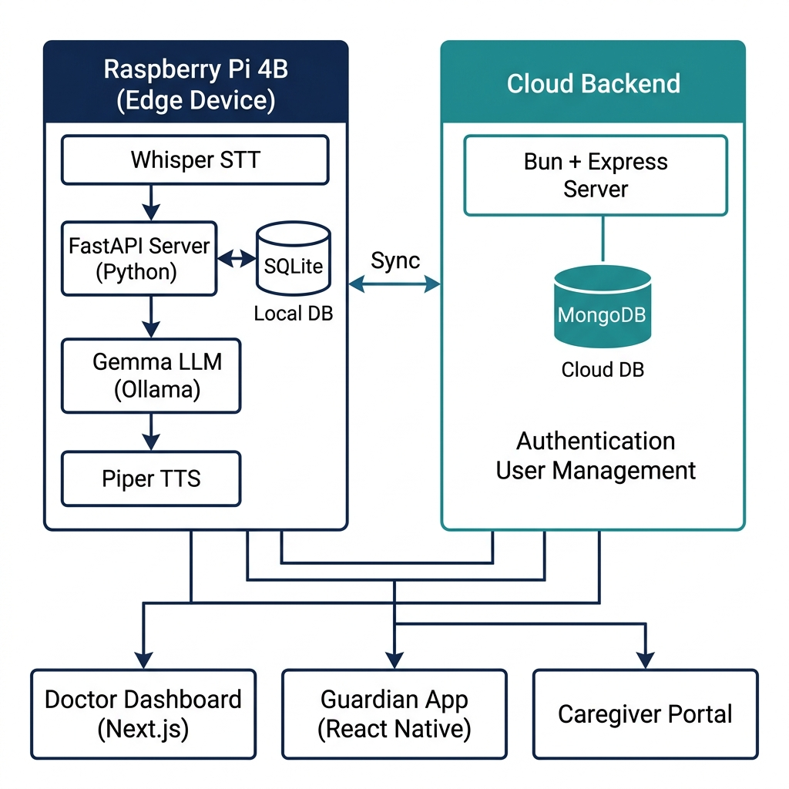
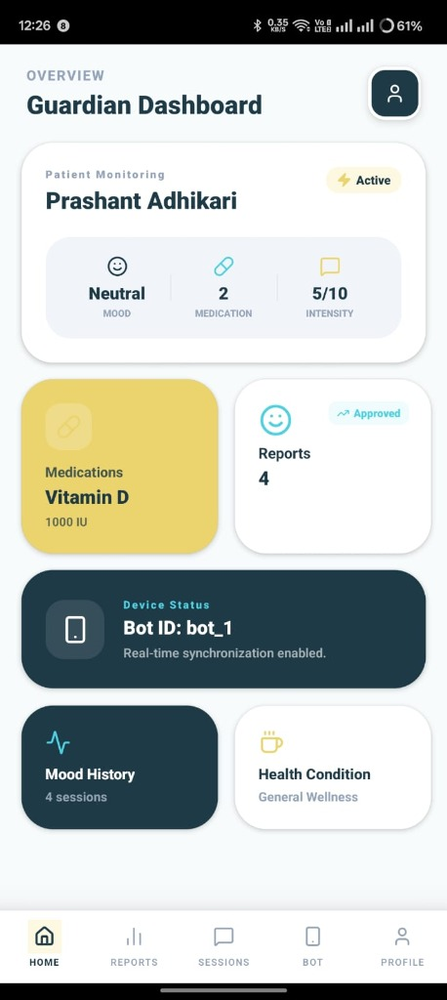
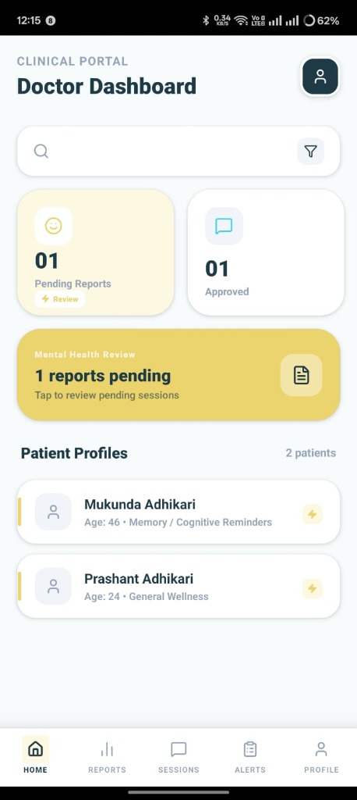
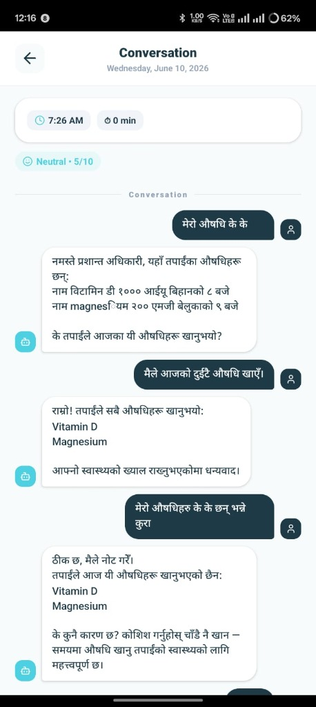
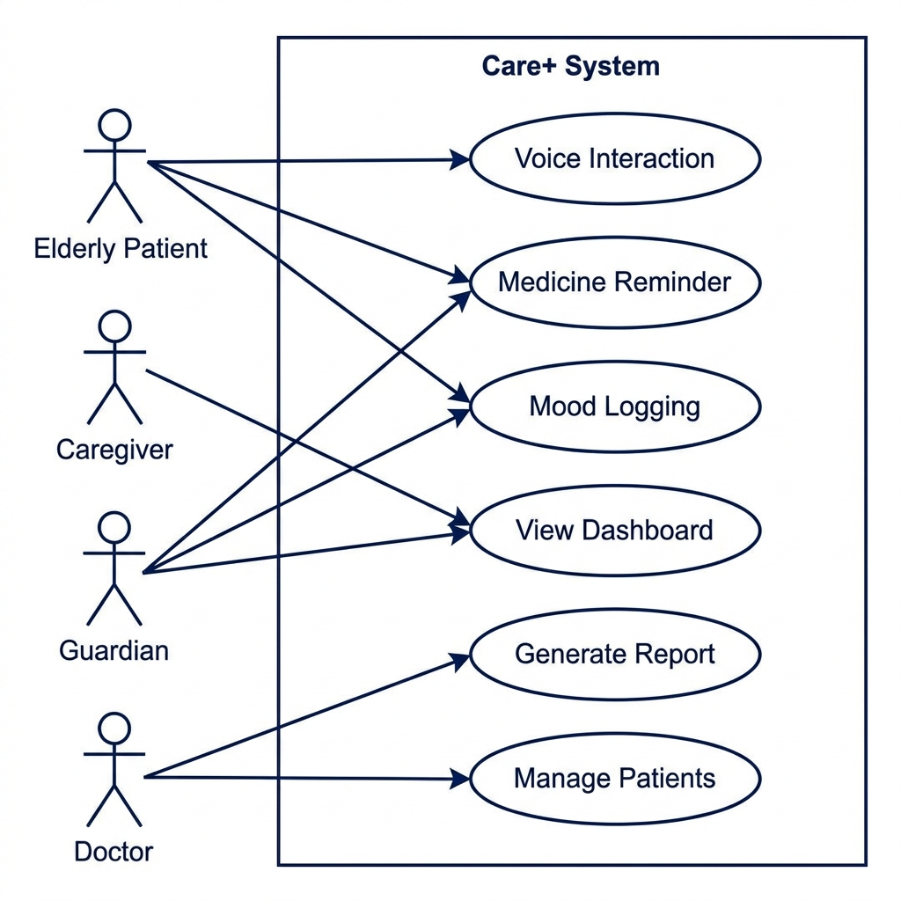

Care+ directly supports three UN Sustainable Development Goals:
SDG 3 is primary — Care+ directly improves medication adherence and ongoing wellbeing monitoring. SDG 9 and 10 reflect the technology-driven, inclusive design approach.

| Component | Technology |
|---|---|
| Edge Device | Raspberry Pi 4B |
| AI / LLM | Ollama — Gemma 4 (e2b) |
| Speech-to-Text | Whisper (Nepali fine-tuned) |
| Text-to-Speech | Piper TTS (Nepali models) |
| AI Server | FastAPI (Python 3.10+) |
| Orchestrator | Bun + TypeScript |
| Mobile App | React Native |
| Web Dashboard | Next.js |
| Database | SQLite (local) + MongoDB (cloud) |




Design Thinking + Agile across four milestone sprints:
MVP validated through unit testing, hardware reliability testing, voice recognition in varied environments, and informal user acceptance testing with elderly pilot participants.
USP: The only privacy-first, Nepali-first AI companion that unifies medicine adherence, emotional monitoring, and multi-role caregiver coordination in a single home device.